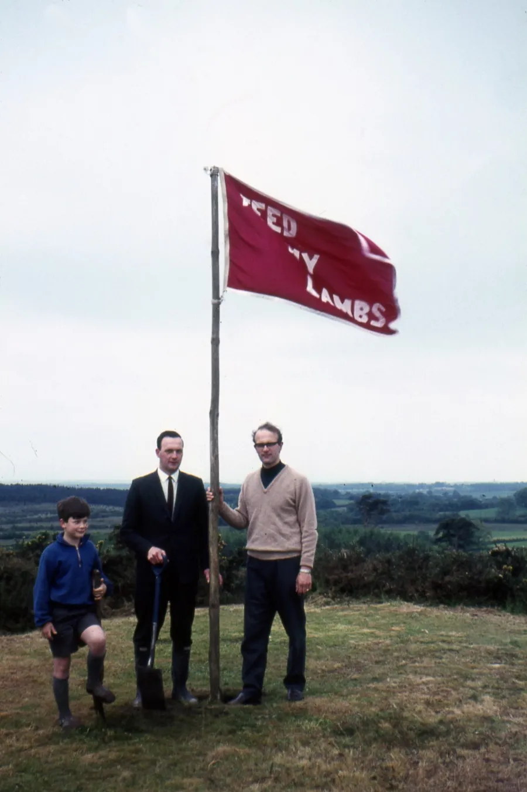
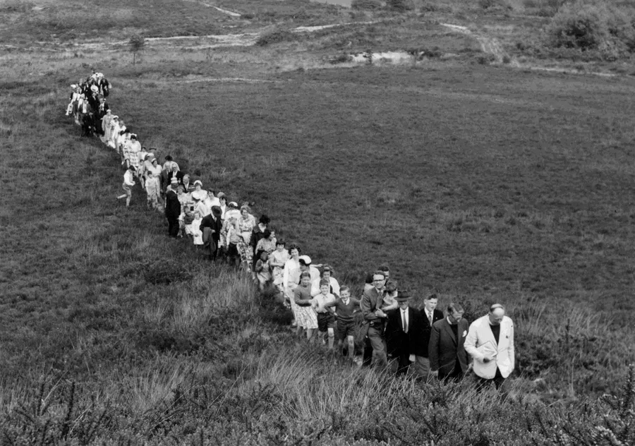
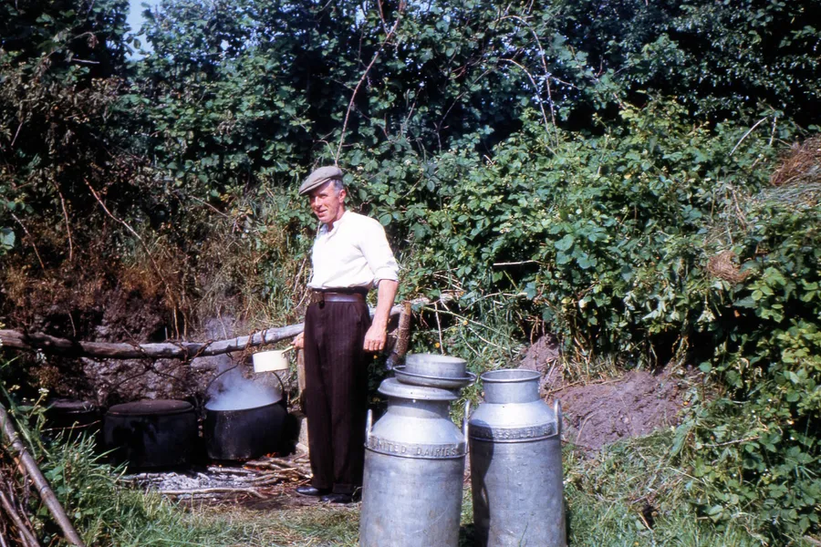
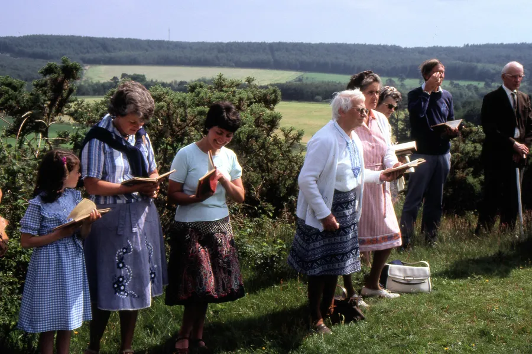
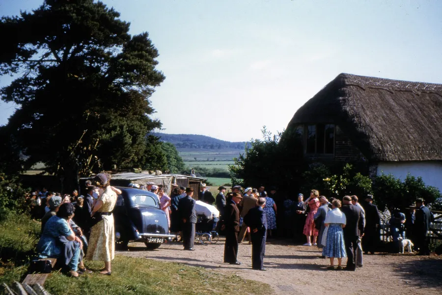
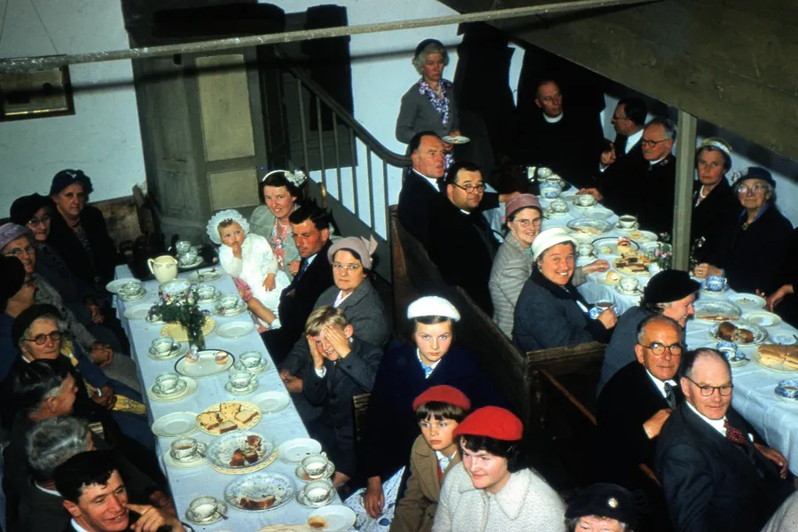
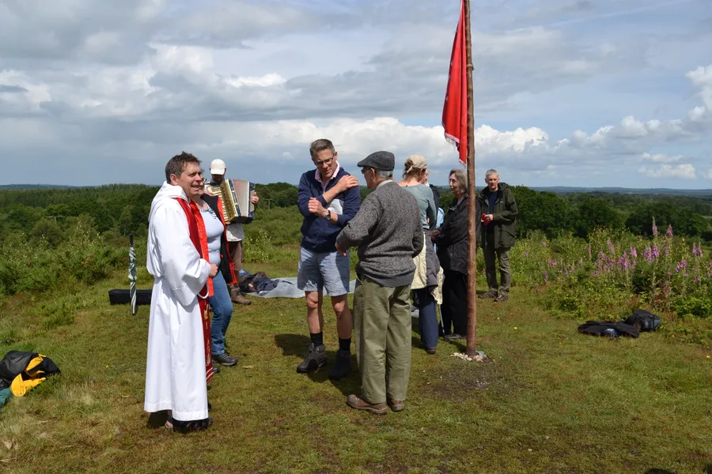
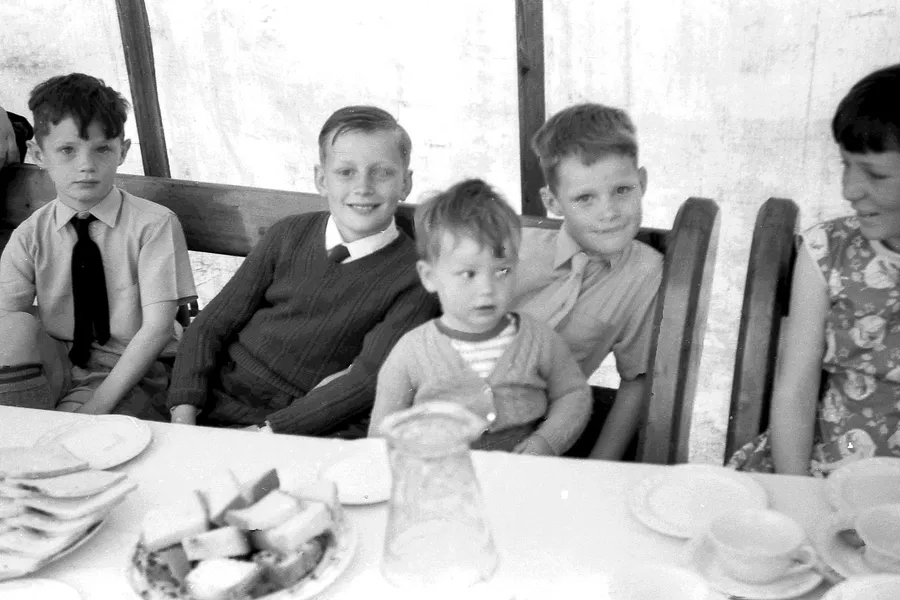

Whitsunday and Whit Thursday
by Adrian King

These were the Sunday School and Church anniversaries at Cripplestyle Congregational Church.
Thursday was a special day even before the new church was built. Thursday was the day that the children held their Sunday School anniversary. A newspaper article of 1887 says
“This in bygone days used to be the great event of the year, and hundreds of people would come from miles around to Cripplestyle tea. It has been said that at one time there would be a thousand people sitting down to tea. But excursions, club fetes and the thousand and one attractions that draw people now, have played sad havoc with this gathering. So that last week there could hardly have been more than three or four hundred people assembled.”
“However the children marched as usual in holiday attire headed by a brass band to the top of King Barrow Hill. A considerable eminence that left people but little wind for singing when they had climbed it.” On the hilltop “they were addressed by the Rev. E. E. Cleal of Wimborne. Then reforming again in procession they marched back with their appetites for tea none the less keen for the climb.”

Cripplestyle anniversary has always been known for the rain, the reporter continues
“By this time however the rain that had been threatening all day began to come down in good earnest and people looked out for shelter. Some few a little braver than the rest affected to defy the elements and went about endeavouring to persuade themselves that they were having a good time. But it was no use, the rain kept on and when the chapel was flung open for tea it was soon filled.”
“At half-past six the public meeting began under the chairmanship of the Rev. J. Oliver of Totton, who was followed by the Revs. E. J. Hunt, of Fordingbridge, E. E. Cleal, of Wimborne, G. H. White, of Ringwood, and Mr. J. Hillier, of Salisbury — and a very pleasant meeting it was.”

In the early part of this century the crowds that came to the anniversary could be counted in the hundreds. The Bailey family were responsible for putting the flag on the hill which read Feed My Lambs.
The Manston family boiled water over an open fire and in later years electric coppers were used.

In Oct 1976 it was suggested that of the three boiling pots, two should be sent to missionaries in New Guinea and the third one to the museum at Fordingbridge. Over the years the flag needed maintenance. A new flag was made for the 1957 celebrations.
In 1957 the ladies discovered that buying the cakes from one place had reduced the cost by about £3. This was still an issue in the 1993. The compiler remembers that the cakes were usually bought from shops in Cranborne.
The marquee and trestle tables needed repair in 1959.

In 1993 it was suggested that the traditional hymns which were normally sung should be changed and added to by some more modern hymns. For a while following the closure of the Williams Memorial Chapel in 2000 the traditions and customs were deemed to be worth continuing for their value in reminding everyone of the faith of those who built the original building.
For five years Alderholt Congregational Church arranged the celebrations. These were now usually on the Whitsun weekend because it was now getting difficult to get anybody to turn out during the week. In 2005 it was decided to transfer the organisation of the celebration to the churches in the parish.

It now took on a different form. For two years there was a pilgrimage taking in the memorial site and King Barrow but also visiting all the places of worship in the parish – Alderholt Congregational, The Tabernacle, St. James and Crendell Methodist.
In 2005 the walk started at Alderholt Congregational and ended at Crendell Methodist and in 2006 the walk was reversed. However, 2007 was the 200th Anniversary of the building of the Ebenezer chapel and it was decided to revive the traditional celebration to mark this on Whitsunday May 27th. Due to usual bad weather the planned service on the hill did not take place. A few gathered at the memorial site for a prayer and a hymn Come thou Fount of every blessing. They then made their way to the Williams Memorial Church where the service was held.

Dennis Bailey was the Chairman, Keith Bailey from Southampton was the speaker and musicians from the parish provided music. A few hardy individuals made it to the top of King Barrow in the pouring rain, said a prayer and sang the first verse of What a friend we have in Jesus before returning to the chapel for the service. There was a display of pictures from past celebrations and artefacts that had been in the original building. Dennis Bailey showed videos that he had made over the years.

Since then a few have met on the hill with a short time of worship led by Philip Martin. 2019 was the last time that the flag was put up. Post Covid-19 a service was arranged for Whitsunday 2021 but the weather was inclement and only a few hardy individuals attended.
